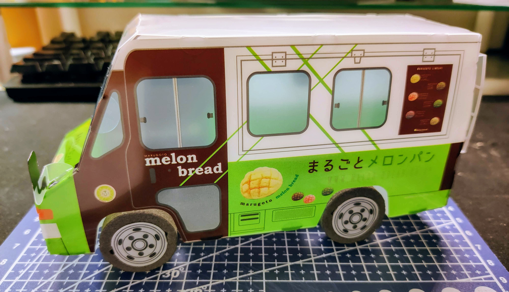
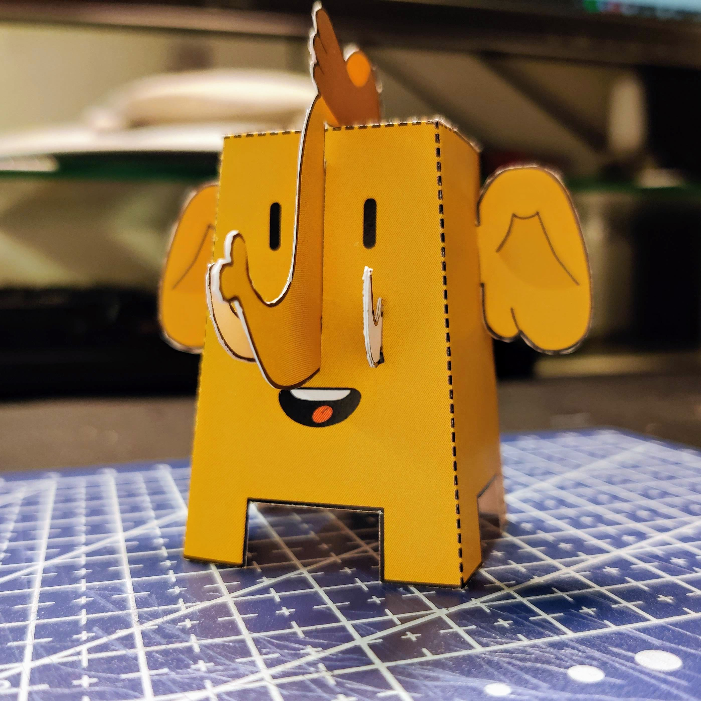

メロン メロン まるごとメロン♪
去年九月预订了MIU404的DVD-BOX，昨天可算是到了，虽然我已经飞速出圈🤦♀️
不过当初预订的时候多少就是因为看中了预订BOX送的模型玩具，到了之后果然是不出意料地好玩XD

竟然还是可动玩具！
当初看图以为是需要胶粘的硬塑料，我还特地去买了纸艺工具，拆开包装才发现是软塑料，而且完全不需要胶粘……好在按照说明图拼好就行了，车轮还能转，就神奇💯
本着纸艺工具不能白买的精神，我又在外出办事的过程中顺便把之前收藏的长毛象纸模玩具打印了出来，徒手拼完车之后做了一只可爱的象：

可爱吧
玩具的原发布地址在这里（但是PDF好像已经没了……）；做的时候细节还是处理得比较毛糙，但是做起来就真的特别解压，舒服。